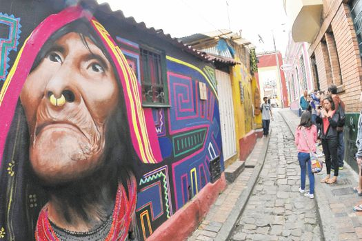

Chorro de Quevedo
¿Dónde ir?
¿Quienes lo habitan?
¿Qué se puede hacer?
Historia
Mapa interactivo
Creditos

©Nota. Adaptado de Una noche en la plaza donde nació Bogotá [Fotografía], por Cristian Garavito, 2016, El Espectador (
https://www.elespectador.com/bogota/una-noche-en-la-plaza-donde-nacio-bogota-article-647515/)
}